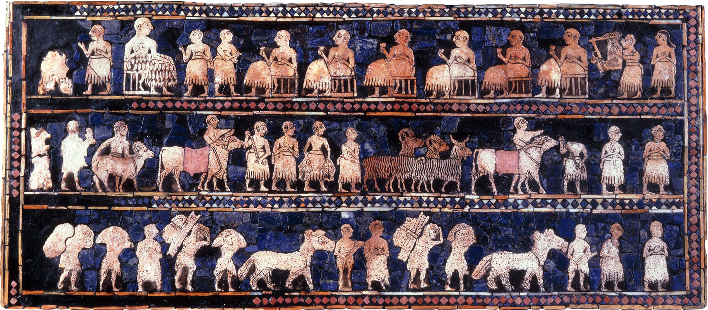

RELIGION
The significance of wheat for these early groups began to shape their religious beliefs. Images of deer, birds, and other animals were common in pre-Neolithic temples, but archaeologists studying Neolithic sites have found papyrus images, crafts and other artifacts showing Mesopotamian deities dedicated to wheat.
The Sumerian culture (5,000 BCE- 1750 BCE), located in modern day Iraq, was in many ways the culmination of the thousands of years of transformations that evolved over the Neolithic period. It is regarded as the world’s first urban civilization, and they worshipped specific deities such as Enten, a god of irrigation and agriculture and Ashnan, the goddess of grain. Sumerian mythology tells us her mission was to feed humanity.
The ancient Sumerians also had a goddess of beer, Ninkasi, who was responsible with overseeing the daily preparation of this popular drink. The female association with beer is evidenced in the Sumerian text Hymn to Ninkasi (1800 BCE).
Wheat and cultivation took on a new and widely diverse symbolism. It is no surprise that the female, associated with procreation, was also associated with wheat and harvest. Agriculture, after all, was directly sustaining the lives of these early peoples. The seasonal cycles of sowing, thrashing, collecting, then re-tilling the soil lent themselves to the emerging concept of reincarnation, rebirth, and continuity between life and death or between generations. These concepts coalesced into religious beliefs, rituals dedicated to the harvest of wheat. Still to this day, death is frequently depicted in many cultures with a scythe—the instrument that is used to sow the vital grain from its stem and which marks the end of a particular growing season.
“From sunrise till sunset, may the name of Grain be praised. People should submit to the yoke of Grain. Whoever has silver, whoever has jewels, whoever has cattle, whoever has sheep shall take a seat at the gate of whoever has grain, and pass his time there.”
CLOSING PROVERB
From the Debate between Sheep and Grain (Sumerian creation myth)
HYMN TO NINKASI
...When you pour out the filtered beer
of the collector vat,
It is [like] the onrush of
Tigris and Euphrates.
Ninkasi, you are the one who pours out the
filtered beer of the collector vat,
It is [like] the onrush of
Tigris and Euphrates.